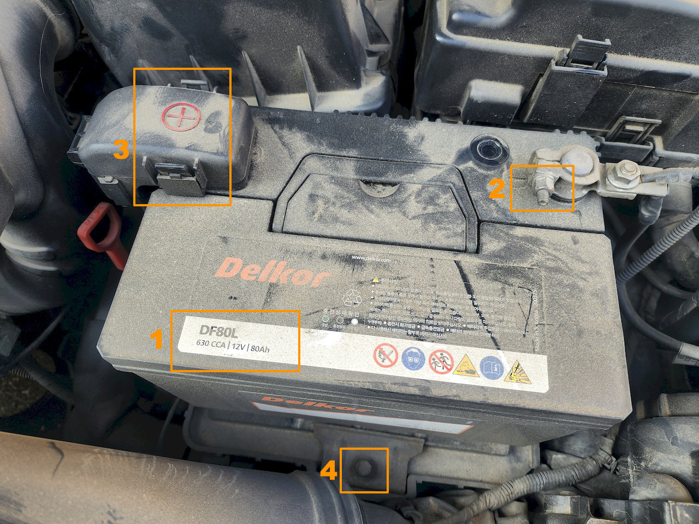
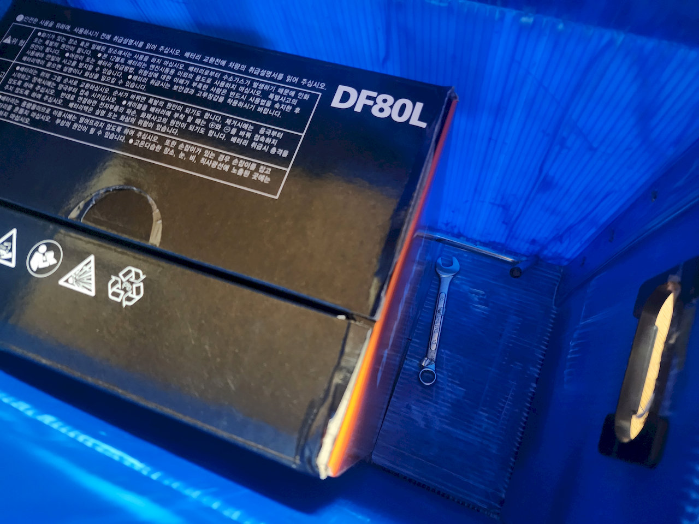
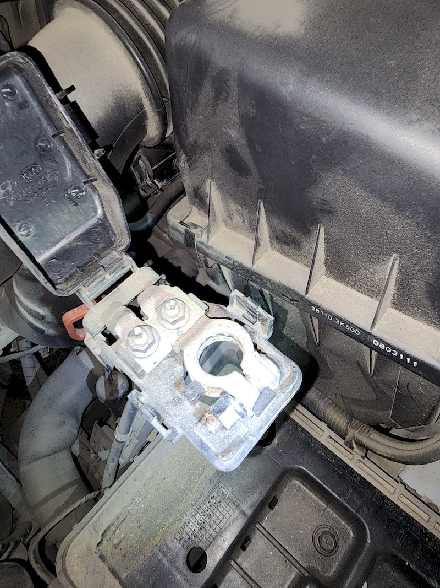
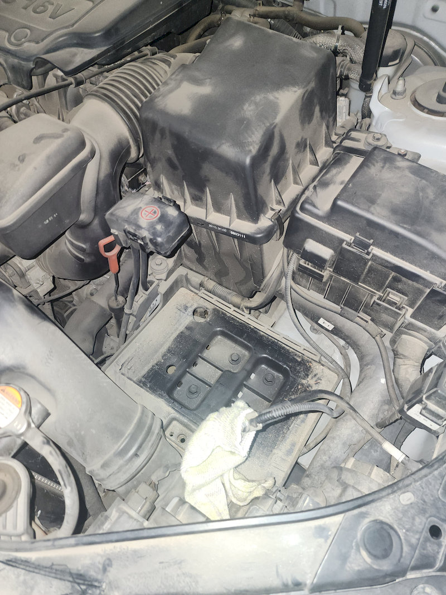
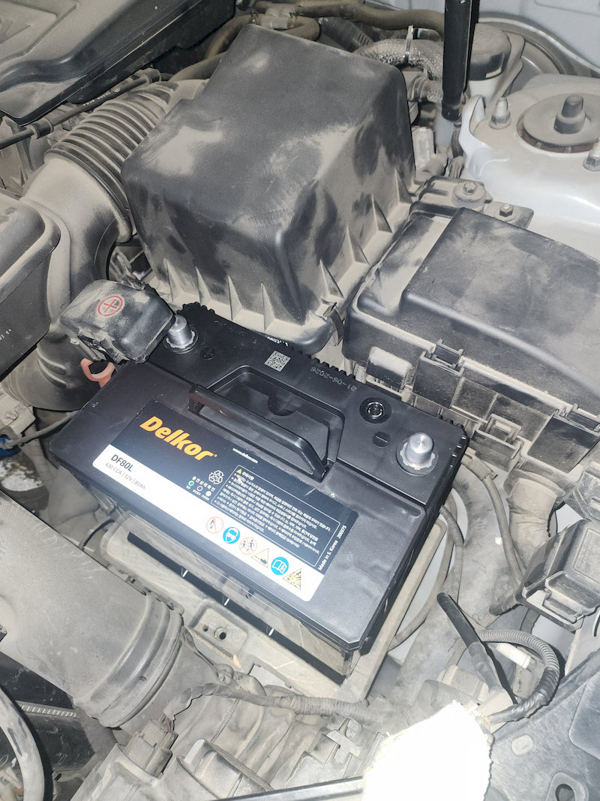
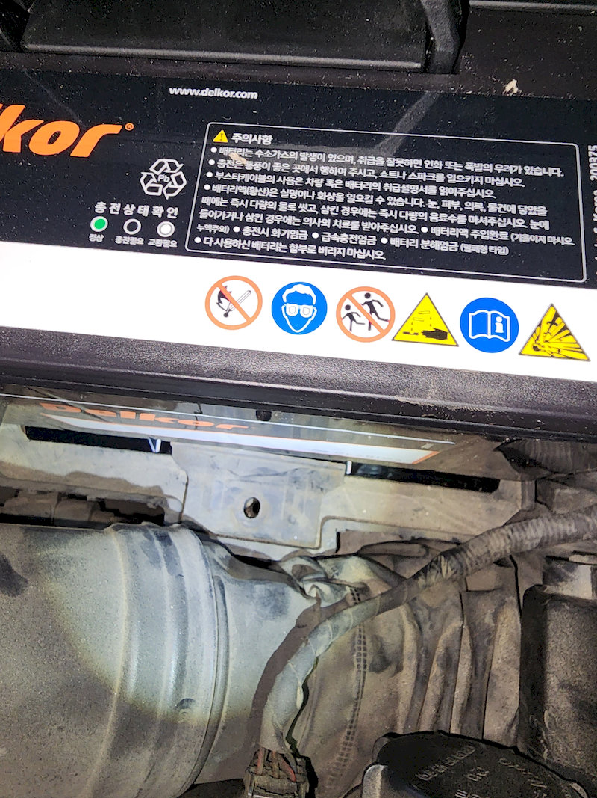
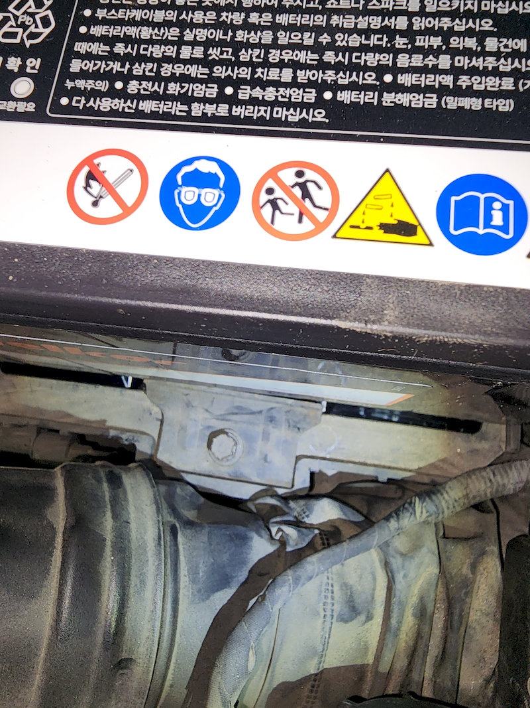
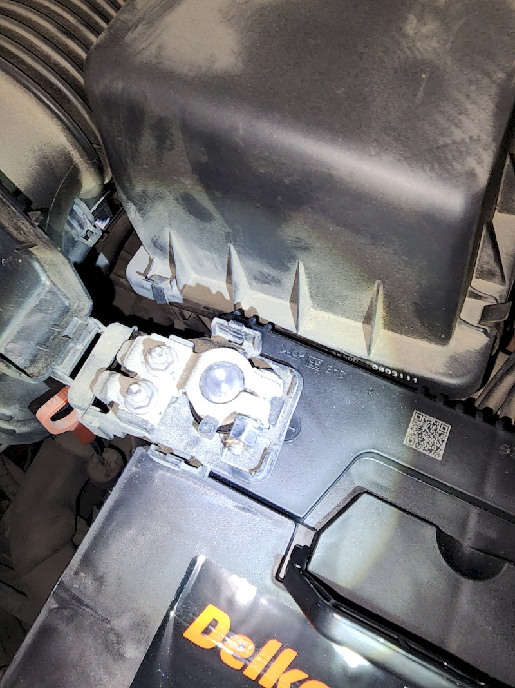

쏘나타 브레이크 등을 교체한 지 얼마 안 돼 배터리가 말썽이 났다. 전에는 배터리가 나가면 시동이 아예 안 걸리더니 이번엔 좀 지나서 다시 되길래 카센터에 끌고 갔는데 사장님이 확실하지 않다고 좀 더 두고 보자고 했다. 그러나 다음 날 영 시동이 안 걸렸고 보험사 서비스를 호출할 수밖에 없었다. (감사합니다!)
결국 배터리 이상을 확신하고 쇼핑몰을 검색해보니 요즘엔 공구도 대여해주고 설명서도 보내준다는 게 아닌가. 자동차 배터리는 처음 교체하는데 막상 해보니 단자 두 개와 고정쇠만 풀면 되는 간단한 작업이었다. 배터리가 무거워서 허리만 좀 조심하면 어렵지 않게 끝날 수 있고 가격도 생각보다 훨씬 저렴한 작업이다.
배터리 모델 확인, 주문
배터리를 교체하려면 먼저 새 제품부터 알아봐야 한다. 차에서 보닛을 열고 기존 배터리의 모델을 확인하도록 한다.
쇼핑몰에서 차량별로 배터리를 나열해 놓기도 하는데 난 기존 사용 제품과 같은 걸 사기로 했다.
내 차에 있던 제품은 아래 사진의 1번 위치에 적힌 DF80L, 12V 80Ah 배터리였다.
내 배터리는 왼쪽이 양극, 오른쪽이 음극인데 차량에 따라서는 위치가 반대인 경우도 있는 것 같았다. 모델을 잘 확인하도록 한다.

작업 과정은 위 사진과 같다.
- 배터리 모델 확인: 기존 배터리 제품명을 보고 주문했다.
- 음극(-) 단자 분리: 새 배터리가 도착해서 교체할 때는 음극 단자부터 푼다.
- 양극(+) 단자 분리: 양극 보호 덮개를 열고 단자를 푼다.
- 고정볼트 분리: 배터리 앞쪽 아래의 볼트를 풀어 고정쇠를 뺀다.
쇼핑몰에서 주문할 때 보니 단순히 배터리만 보내는 게 아니라 공구 대여와 폐배터리 수거가 기본 옵션으로 돼 있다. 그러고도 가격은 62,700원. 그만큼 DIY가 일반적이라는 거겠지. 아래가 실제로 배송돼 온 배터리와 공구 사진이다.

배터리 갈겠다고 스패너 같은 공구를 살 필요도 없고 폐배터리도 알아서 수거해가니 참 편리한 세상이다.
교체 작업
위 배송 박스에 보니 배터리 교체 안내문도 포함돼 있다. 설명에서 사진이 좀 작긴 하지만 배터리 교체가 얼마나 간단한 건지는 알 수 있다.
{kind=link}
교체 작업의 핵심은 단자 순서다.
- 기존 배터리를 뺄 때는 음극(-)을 먼저, 그다음 양극(+)을 분리한다.
- 새 배터리를 연결할 때는 반대로 양극(+)을 먼저, 그다음 음극(-)을 연결한다.
시동을 끄고 차 키도 뺀 뒤 작업해야 한다. 보닛을 열고 앞서의 순서 사진에서 기존 배터리의 음극 단자에서 너트를 풀고(2번) 배터리에서 떼어 놓은 다음 양극 보호 덮개를 열고 다시 양극 단자의 너트를 푼다(3번).
작업 중 공구가 양극 단자와 차체 금속에 동시에 닿으면 합선될 수 있다니 주의한다. 분리한 단자는 작업 중 다시 배터리 단자에 닿지 않도록 옆으로 치워둔다.
단자를 모두 분리했으면 4번에 표시한 고정쇠의 볼트를 긴 공구로 푼다. 볼트와 고정쇠를 엔진룸 안쪽으로 떨어지지 않도록 조심해서 꺼내야 한다. 난 한 번 떨어뜨리긴 했으나 바로 아래 떨어져 괜찮았는데 잘못하면 배터리 받침 바깥으로 떨어질 수도 있을 것 같았다.
다음으로 배터리를 들어내는데 다 쓴 거라고 생각이 되는데도 새 배터리나 마찬가지로 무거웠다. 가운데 손잡이가 있으니 잡고 들어올리는데 무리가 가지 않도록 자세를 조심해야 한다.
 
배터리를 들어낸 뒤에는 분리해둔 단자와 케이블이 새 배터리를 넣을 때 걸리지 않도록 옆으로 잘 치워두도록 한다.
새 배터리 장착
아래 사진과 같이 새 배터리를 빈 자리에 그대로 안착시켰다. 이때 쇼핑몰 안내문에 있는 대로 배터리 좌우에 누수 방지용으로 붙어있는 작은 테이프를 뗀 후 설치해야 한다.

그리고 배터리가 움직이지 않도록 아래쪽 고정쇠를 제자리에 맞춘다.
 
고정쇠에 볼트를 끼워 체결하고 배터리가 움직이지 않는지 고정쇠 상태를 잘 확인한다.
분리할 때와 반대로 양극 단자를 먼저 끼우고 너트를 조인 뒤 음극 단자를 연결하고 너트를 조인다.

다 됐으면 시동을 걸어본다. 이미 배터리를 연결하면서 비상등이나 계기판 불이 들어와 연결이 된 건 알 수 있었는데 시동을 걸 때는 약간 긴장되긴 했다. 당연히 시동은 잘 걸렸다.
폐배터리는 다시 상자에
작업이 끝나면 기존 배터리를 새 배터리가 왔던 상자에 넣는다. 배터리 양쪽 구멍은 안내문에 나온 대로 막고 대여한 공구도 택배 상자 안에 함께 넣는다. 박스를 테이프로 마감하고 집 현관문 앞에 내놓으니 3일 후 회수해 갔다.
폐배터리와 공구를 반납하지 않으면 추가 비용이 생길 수 있으니 주문할 때 옵션이나 회수 방법을 잘 확인해야 한다.
배터리 교체가 이렇게 쉽고 가격도 싼 줄 알았으면 진작 이렇게 했을 걸 싶다. 배터리 무게와 단자 순서만 조심하면 작업 자체는 복잡하지 않았다. 브레이크 등에 이어 배터리도 직접 교체 성공.
댓글
댓글을 불러오는 중입니다.